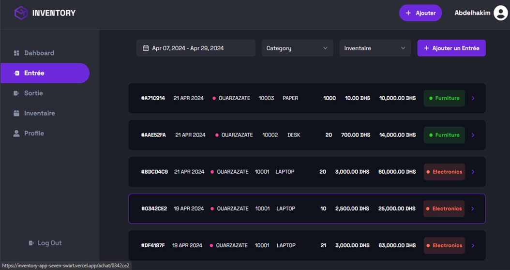

Problematique?
Comment les entreprises peuvent-elles optimiser leur gestion de stock et leurs inventaires grâce à l'intégration de solutions numériques, tout en surmontant les défis liés à la synchronisation des données, à la gestion des niveaux de stock et à la prévision des besoins futurs ?
Solution:
Pour répondre aux défis de la gestion des stocks et des inventaires, une solution moderne et efficace consiste à mettre en place une application web dédiée. Cette plateforme offre une interface conviviale permettant de surveiller en temps réel les niveaux de stock et d'enregistrer les mouvements d'inventaire.
Les besoins fonctionnels:
- La possibilité de suivre les niveaux de stock en temps réel pour plusieurs inventaires
- Enregistrer les entrées et les sorties d'inventaire pour chaque inventaire distinct
- Générer des rapports sur les mouvements d'inventaire par inventaire spécifique
Technologies Utilisées:
- Tailwind CSS
- TypeScript
- ReactJS
- Next.js
- PostgreSQL
- Prisma ORM
1.Page d'inscription
2.Page d'authentification
3.Page d'accueil
4.Fenêtre d'ajouter une Entrée
5.Fenêtre de gestion des entres
6.Fenêtre d'ajouter une sortie
7.Fenêtre de gestion des sorties
8.Fenêtre de stock
9.Fenêtre de deferent inventaire